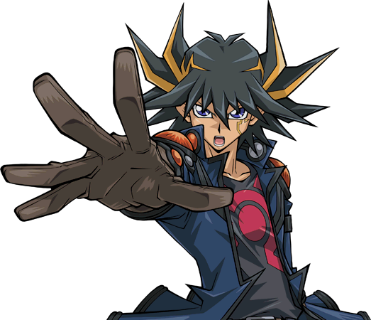
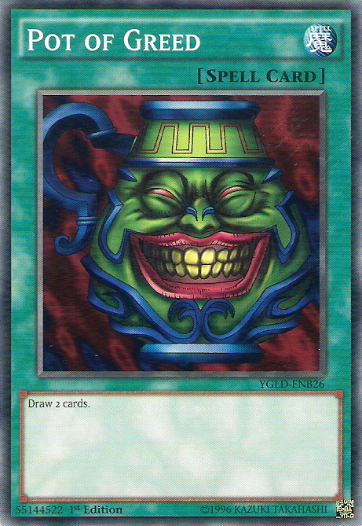

Yugo and Rin finally meet Jack! How will they handle this one?
Yugioh: The Power of Four
Jack Atlas,
a tall young man with spiked up blond hair and wearing white and gray riding clothes, observed
Yugo and
Rin 's childish
behavior with an apparent look of disapproval. He showed up at the penthouse just in time to see the two teens fall into the pool and started splashing one another.
He didn't show it, but he was taking great pleasure at their reaction from seeing him.
As if the water had suddenly grown too hot, Yugo and Rin scrambled out of the pool and then bowed before the man they idolized, dripping wet and eyes closed.
Rin: ack Atlas! King of Riding Duels! W-We, that is Yugo and I, a-are... s-so honored to meet you, sir!
Rin said in a rushed greeting, still visibly embarrassed.
Yugo: Y-Yeah! Rin and I, see... the thing is, we uh... never thought we'd meet you... like this! This is DEFINITELY not h-how we expected to...
Yugo followed, sounding like a boy caught with his hand in the cookie jar.
Jack: Enough! Stand up straight, both of you!
Jack commanded.
Yugo and Rin: Yes sir!
At his word, the two straightened themselves up, eyes open, and both still scared out of their skins and soaked.
Yusei
and the twins stayed back and didn't say anything as they watched the fun. Jack then started walking around Yugo and Rin, still scrutinizing the pair. Neither one of
them dared to speak but gulped as they followed the man with their fearful eyes. Jack stopped in front of them, his expression not changing in the slightest.
Jack: Yugo and Rin, Yusei has informed me about you two and your situation. First off, let me make something perfectly clear. While we have many similarities, I am not the Jack Atlas
of your world. However, that does not change the fact that you are in the presence of the King! As such, you will do your very best to show the upmost respect to
that King! Is that understood?!
Yugo and Rin: Yes sir!
Said the flustered teens again.
After a long moment of silence, Jack now smiled, secretly enjoying watching them squirm. When he spoke, he sounded much calmer.
Jack: Very good. Now then, any questions?
He asked.
Rin was the first to speak up, still sounding a bit squeaky.
Rin: I, um... I have a question, sir.
Rin said, her voice trembling.
Jack: Ask Rin.
Jack simply said.
Rin: H-How... do you and Yusei... know each other?
She barely managed to say.
Instead of answering, Jack pulled up the sleeve of his right arm and showed it to the duo. Yugo and Rin gasped; it was a
Dragon Birthmark,
like the ones Yusei and the others had. In Jack's case, it appeared to be a pair of dragon wings.
Jack: As you can see, I also bear a Signer's Birthmark. Like Yusei, Crow, Aki, Rua and Ruka , I too was chosen by the Akakiryu
to help protect the world from great evil. The moment Yusei returned here with the two of you, my mark alerted me and I immediately made my way back here.
I've only just arrived to see you both... in the water.
Jack said the last bit in a low tone, further embarrassing the two. Another moment of uncomfortable silence followed before Yugo finally had the nerve to talk.
Yugo: Um... Mr. King, Jack, uh...
He started, rather badly.
Jack: Boy! You will address me as either Jack or sir! Got that?
He shouted again.
Yugo: Y-Yes, sir! Anyway, about my question...
Yugo started again, but stopped.
Jack: Yes? Jack asked impatiently. Yugo gulped once more he resumed talking.
Yugo: Jack Atlas... I wanted to duel you... that is, the you in our world…for a long time. So um... what I want to know is...
Yugo took a deep breath and let it out.
Yugo: Can we... please have a Duel?
Rin gapped at Yugo. She didn't think he'd actually dare challenge Jack Atlas like this. He may not be the one they admired, but he had to still be the best here. She
wanted to berate him for it, but she didn't dare do so with Jack around.
As for Jack himself, he narrowed his eyes and walked closer to Yugo until he was right in front of him only. Yugo felt like he shrunk under the older man's gaze.
Jack: So, you wish to duel me Yugo?
He asked softly, making the boy sweat.
Yugo: Yes sir, I do.
Yugo answered, trying to keep his voice steady.
Jack said nothing, still staring at Yugo. He appeared to be sizing him up. Then, to the great surprise of Yugo and Rin, Jack laughed. The two looked confused. When he
ceased laughing a moment later, he pointed at himself.
Jack: I, Jack Atlas, don't accept challenges from just anyone! I only duel those I judge to be worth my time, and I would prefer them to be more on the... dry side.
Jack emphasized, seeing water still dripping from Yugo's hair and clothes. This made Yugo grimace a bit. He was starting to think he won't get the chance, when...
Jack: However... Jack continued.
Jack: If you truly wish to face me in a Duel, then you must prove yourself.
Yugo: How? I'll do anything! Yugo said, now starting to feel hopeful.
Jack: You do possess your own D-Wheel, do you not?
Yugo: Yes sir, I do! Yugo answered. Jack then smirked.
Jack: Then I want you to duel my fellow Signer, Crow Hogan. And not just any Duel... but a Riding Duel! If you can best him, then I might consider dueling against
you. If not... I would not want to waste any more of my precious time with someone who thinks he has what it takes to take on the King! Especially when that someone
doesn't have the common sense to wear dry clothes in my presence! Do you accept these terms, boy?!
Yugo couldn't believe his luck! An opportunity to prove himself to duel the Riding Duel King himself! He just had to beat Crow, which soon became a dilemma. He and
Crow had just started becoming friends, and now Jack Atlas wanted the two of them to go head-to-head. Still, he couldn't let this pass up.
Yugo: Hell yes! Um, I mean... yes, I accept, sir!
Yugo said corrected himself after the stern look Jack gave him. The older Duelist nodded after a moment.
Jack: Very well, then. Yusei will help prepare you for the upcoming Duel. I will go and tell Crow to also get ready. The match will began in two hours. Do NOT be late.
Jack said while walking away.
Yugo: Oh, trust me Jack! I'll be there! You won't be sorry!
Yugo shouted at the man.
Jack: But before I leave... I want a quick word with you, Yusei. Jack said just before he went inside.
Yusei: Of course. Yusei said as he followed him.
As soon as they were inside, Rin let out a breath of relief, while Yugo shouted for joy.
Yugo: YES!!! Did you hear that Rin?! I have a chance to duel Jack Atlas! Isn't that awesome?!
Instead of answering, Rin frowned at him.
Yugo: W-What? What is it Rin ?
Rin: ugo, I honestly can't believe you would challenge him like that. I'm even more surprised he'd actually give you that chance. I mean, we weren't exactly
expecting him to drop in on us like that! Which reminds me...
Rin then rounded on the twins, who backed up a little.
Rin: You both KNEW about Jack Atlas, didn't you?! You two, Yusei, Crow, and Aki all knew and none of you told us!
Rin then remembered something. Last night, Yusei said Yugo had been sleeping in Jack's room. She had thought it was some other guy named Jack at the time. She never would've thought he meant the King's room!
Rua: Look Rin, Jack made us all swear not to say anything to you and Yugo until he met you both himself! It wasn't our idea! Rua explained nervously.
Ruka: It's the truth. Please, calm down Rin.
Ruka begged, also cowering from the older girl's anger. Eventually, Rin did settle down before turning back to Yugo.
Rin: Aren't you upset about this?
She demanded. Yugo shrugged.
Yugo: Not really. I mean, sure, I didn't think Yusei and his friends were also buddies with Jack Atlas. Hell, I don't even know how there could be more than one
Jack in existence! But so what? It doesn't change the fact that I might duel him soon!
He said with excitement.
Rin: You do know that you have to beat Crow first, don't you? She asked.
Yugo: Yeah, I know. Yugo replied.
Rin: Then you need to take this more seriously. If dueling Rua has taught me one thing, it's that you should NEVER underestimate a Signer! Crow may be as strong as Yusei.
She warned.
Yugo: Who said I wasn't taking this seriously?! Trust me Rin, I've got this!
His friend sighed in defeat while shaking her head.
When both adult Signers were alone and out of sight, Jack laughed.
Jack: So? How do you think I did out there?
Jack asked, now sounding much more relaxed than he did outside.
Yusei: I think you gave Yugo and Rin quite a scare.
Yusei said, smiling a little. Jack looked proud of himself for the performance he just gave.
Jack: As they should be, considering who stood towering over them.
Jack then smiled at his rival and friend.
Jack: I had a damn good time out there intimidating those kids. Thanks for not telling them about me, and for letting me have some fun.
He said sincerely.
Yusei: Sure, although you could've gone a little softer on Yugo when you kept bringing up how soaking wet he was.
Yusei said. Jack then grunted, ignoring that last part.
Jack: What about you? You sure you don't want to tell them that...
Jack started.
Yusei: There's no need for them to know. I never really cared about taking your title as King at the Fortune Cup. It will be fine that they think you are the King here.
Yusei said, sounding humble. Jack sighed as he patted Yusei's shoulder.
Jack: Fudo Yusei... the humblest person I know.
With that, Jack headed out to inform Crow about his upcoming Duel with Yugo.
Chapter 11: Proving your strength to the "King". Yugo vs Crow.
Two hours later, everyone met at a basic looking racing track. Yugo and Rin (in dry clothes now) arrived just in time with Yusei, Rua, and Ruka accompanying them. At
the starting line stood Jack and Crow, the latter prepping his D-Wheel for the Riding Duel. Aki was also there, having heard of the Duel from Ruka. She sat in the
stands, waving at Yugo's group with a smile.
Jack: So Yugo, you have arrived. Jack said. Yugo smiled.
Yugo: That's right Jack! I told you I would be! The older Duelist snorted.
Jack: Try to impress me.
ack said boringly as he stood aside, allowing the boy to get his
DWheel, in position next to
Crow's. Before he did so, he gave a thumbs up to Rin and
the others.
Yugo: Wish me luck!
He said before proceeding out onto the track.
Rin: Good luck Yugo!
Rin shouted, though she still felt apprehensive about this.
Yusei: Yugo will do fine. Yusei assured her. Rin nodded, but still worried.
Ruka: Do your best Yugo! Ruka shouted.
Rua: Show Crow what you're made of! Rua added.
Jack then sat to Yusei's left, while Aki was on the right. Rin and the twins were all sitting on Aki's right. Rin still felt slightly nervous that Jack sat so close.
Jack: I've told Crow not to hold back against the boy. If Yugo really does want to face me, he'll have to do the same.
Yusei: Yugo is a talented Riding Duelist. I'm sure he'll surprise you.
Aki: I can't wait to see what he can do. Aki replied. Jack said nothing as he waited for the match to start.
Down at the track, Yugo and Crow greeted one another with a fist bump.
Crow: Hey Yugo! You ready for this? Crow asked with a big smile.
Yugo: Hell yeah, I am! Even with the changes to my Deck, I'm confident I can kick your ass!
Yugo replied confidently. Crow laughed.
Crow: Big talk, kid! Let's see if you have the skills to back it up!
Yugo smirked as he and Crow mounted their D-Wheels. As they looked over their controls one final time, Yugo thought back to the said "changes" to his Deck...
Flashback
After taking a shower and putting on their now dry clothes, Yugo and Rin began with the former's preparations for the upcoming Duel with Crow. After looking over his
D-Wheel, Yugo felt nothing could go wrong. That is, until Yusei gave a very unexpected suggestion.
Yusei: Your D-Wheel may be in good condition, but you will need to make some adjustments to your Deck.
Yugo: What do you mean "adjustments"? My Deck is fine the way it is. Yugo argued.
Yusei: Maybe for Riding Duels in your world, but not here. Yusei said, confusing the teens.
Rin: Wait, are you saying Riding Duels in your world are different than the ones in ours?
Rin asked. Yusei nodded.
Yusei: Yes Rin, they are. In this world, when a Riding Duel takes place, a Field Spell called “Speed World ”
activates. Recently, it has been upgraded to
“Speed World 2 ”
. In both cases, at the start of each turn, aside from the first turn of the Duel, both Duelists gain a Speed Counter. The maximum amount of Speed Counters any
Duelist can have is twelve. Previously, you lose Speed Counters depending on the damage you take. With the upgrade to
“Speed World 2 ”
, that is no longer an issue. These Speed Counters are used to activate a unique type of Magic card exclusively for Riding Duels, called Speed Spells. You can only
use certain Speed Spells depending on the number of Speed Counters you have.
“Speed World 2 ”
has its own Effects, which also need the right number of Speed Counters to use.
Yusei explained. Both Yugo and Rin stared wide eyed from the new details.
Rin: Wow. That does make Riding Duels here much more challenging.
Yugo: Sure does. But I can still use my regular Magic cards, can't I?
Yugo asked, still feeling his Deck didn't need any changes. Yusei once again proved how wrong he was.
Yusei: Technically you could, but I would not advise it.
“Speed World 2 ”
has a huge drawback. If at any point a Duelist uses a non-Speed Spell, that Duelist would take 2000 Points of Damage.
Yugo and Rin: 2000?!
The pair shouted in shock. They could not believe this part.
Rin: You're kidding?! Rin yelled in disbelief.
Yugo: That's like... half your Life Points! Yugo added, now slightly paled.
Yusei: Exactly why you need to change your Deck, so that you won't have to deal with that drawback. Riding Duelists make sure they have no regular Magic cards to
avoid this issue. Because of the limited use of Speed Spells, Riding Duelists tend to rely more on their Monsters and Traps. You should too.
Yusei advised. Yugo hung over and sighed loudly.
Yugo: Dammit. Just when I was starting to like this new world... He complained.
Rin: I don't quite agree with it either, but we have to adjust if we're going to be staying here for a while. So suck it up.
Rin said, quickly sounding like her old self. With that, Yugo agreed and began the necessary changes to both survive and win in the upcoming Duel...
Flashback End
Yugo may not like the new Speed Spell rule (actually, he outright hated it), but he wasn't going to let that stop him. He was going to prove to Jack Atlas that he was
a Duelist worth his attention. He and Crow then put on their helmets and revved their D-Wheels to ride.
Yugo: First, since I have no Monsters on my Field, I can Special Summon
“Speedroid Beigomax ”
from my hand.
Yugo's Monster looked like a dark pink spinning top with two razor sharp blades at it's sides.
Yugo: Next, I Summon the Tuner Monster,
“Speedroid Mitsume no Dice ”
.
Yugo's Tuner appeared to be a dark pyramid shaped dice with an eye each side and a spark at each of it's tips.
Crow: Getting serious from the get go, huh?
Crow said to himself.
Yugo: Now I'm Tuning my Level 3
“Beigomax ”
to my Level 3
“Mitsume no Dice ”
! Magical sword with the form of a cross. Use your power to rend all enemies! Synchro Summon! Appear now! Level 6!
“High Speedroid Maken Dama ”
!
Yugo's Synchro Monster was a dark blue high tech chariot with thick armor.
Yugo: Now I activate
“Maken Dama ”
's Monster Effect! Once per turn, I can banish one "Speedroid" Monster from my Graveyard to inflict 500 Points of Damage to you! I banish
“Speedroid Beigomax ”
!
Crow grunted as he took the unexpected, but low, damage.
Crow: Kuuh...
(Crow: 4000 LP - 500 LP = 3500 LP)
Yugo: I Set one card facedown and end my turn!
Yugo: Alright Crow, show me what you got!
Yugo challenged.
Ruka: He damaged Crow already!
Ruka said, impressed.
Rua: Yeah. Rua added.
Aki: Not bad for a first move.
Yusei: That is a good start, but the Duel is just beginning.
Yusei replied. Jack didn't comment as he watched the Duel unfold.
Yugo: Let's do this, Battle !
“Maken Dama ”
attack
“Shinonome no Kochi ”
!
Yugo watched his Monster soar forward, hoping to take down Crow's bird Monster.
Crow: Not gonna happen! Trap card open!
“Black Sonic ”
! When a "Black Feather" Monster I control is being attacked by an opponent's Monster, I can banish all Attack Mode Monsters from your Field!
So say goodbye to your high tech toy, Yugo!
Crow countered as Yugo's Synchro Monster vanishing from sight.
Yugo: Damn! Yugo cursed.
Yugo:
“Burning Sonic ”
could've saved my Monster from Crow's Trap if it tried to destroy it. But with
“Maken Dama ”
being banished instead, I can't do squat!
Yugo: Grr, I end my turn.
Yugo said reluctantly.
Jack: So far I'm not impressed.
Jack said.
Jack: He allowed his Synchro Monster to be banished and doesn't retaliate. He better shape up if he hopes to duel me.
Yusei: He will.
Yusei said with confidence.
Crow: I have no intention of letting you win, Yugo! Summoning your Ace from the start wasn't a very smart move on your part!
Crow taunted. Instead of arguing more, Yugo smirked.
Crow: What's with the look?
Yugo: You haven't seen my Ace yet!
Yugo said, surprising the other Duelist.
Rua: He has something even stronger?
Rua asked Yusei, but he didn't answer. Jack waited to see Yugo's true Ace and what it was capable of. Crow seemed more intrigued now.
Crow: Is that right? Can't wait to see it then! My turn!Draw!
Crow: I couldn't Synchro Summon last turn because
“Kochi ”
's Effect wouldn't let me use it as a Synchro Material on the turn it was Summoned. Now I can bring this bad boy out! I'm Tuning my Level 3
“Kalut ”
to my Level 4
“Kochi ”
Darkened gales, become the wings which will soar to the heavens! Synchro Shōkan !
“Black Feather Armored Wing ”
!
Crow's Synchro Monster appeared to be a one-eyed bird warrior wearing thick black and orange armor.
Yugo: Man, talk about an well armored Monster. That's gotta be his Ace.
Yugo said softly.
Crow: Here I come, Yugo, Battle !
“Armored Wing ”
, Direct Attack!
“Armored Wing ”
soared toward Yugo, fist rearing to punch it out.
Yugo: Like I'd let you! I activate the Effect of
“Speedroid Mitsume no Dice ”
from my Graveyard.When my opponent's Monster launches an attack, I can banish
“Mitsume no Dice ”
to negate the attack!
A phantom version of Yugo's Tuner appeared and blocked
“Armored Wing ”
's assault.
Crow: Not too shabby! I end my turn!
Crow complimented.
Aki: He managed to save himself from heavy damage.
Rin: Yugo can be dense sometimes, but not that dense.
Rin said.
As Yugo and Crow drove past the starting line again, she saw the hint of excitement on her friend's face. The same excitement she too felt when he was about to turn
the tables in a Duel...
Yugo: Get ready Crow! I'm about to take the lead! My turn!Draw!
Yugo: I Summon
“Speedroid Ohajikid ”
!
Yugo's new Monster had the appearance of a toy cowboy with a glowing green disk about to be launched.
Yugo:
“Speedroid Ohajikid ”
's Monster Effect activates! When it is Normal Summoned this turn, I can take a Tuner Monster in your Graveyard and use it and
“Ohajikid ”
for a Synchro Summon!
Crow: Say what?!
Crow yelled in shock.
Rua: Yugo's using one of Crow's Monsters to Summon his own?!
Rua exclaimed. Jack seemed mildly impressed by that move from the boy.
Yugo: Thanks for lending me your Tuner Monster, Crow! It ain't going to waste! Now I'm Tuning my Level 3
“Ohajikid ”
to your Level 4 “Black Feather Shinonome no Kochi ”
! Spread those wondrous and beautiful wings, and strike down your enemies at the speed of light! Synchro Shōkan ! Appear now! Level 7!
“Clear Wing Synchro Dragon ”
!
Yugo's true Ace Monster was a white and black stripped dragon with pieces of blue armor on its arms, chest, and head. It also sported light green see through wings.
Rua: So that's Yugo's real Ace Monster! It looks so awesome!
Rua yelled happily.
Ruka: I really love it's wings!
Ruka added.
Jack: So Yugo managed to bring it out.
Jack thought upon seeing “Clear Wing ”.
He did think it looked intimidating, but he was withholding judgment until he saw the dragon's abilities with this own eyes.
Crow: That was a cheap move! Using one of my Monsters like that!
Crow said, greatly irritated. Yugo snickered.
Yugo: Hey, it worked, didn't it? But you won't have to deal with it for the moment. I Set one card facedown and end my turn!
Yugo said as he finished his move.
Rua: He didn't attack.
Aki: Yugo probably didn't want to make the same mistake twice.
Aki said. Jack nodded in agreement.
Crow: Alright Yugo, it's payback time! My turn! Draw!
Crow: Then I play my Trap,
“Sajin no Otatsumaki ”
!
This not only destroys one Magic or Trap card on your Field, but I can also Set one of my own! Eat this!
Crow said with satisfaction as he destroyed one of Yugo's facedown card and Set his own card.
Yugo: Crap! Not my
“Burning Sonic ”
!
Yugo complained, losing the very Trap card he thought of earlier.
Crow: What goes around, comes around! Battle!
“Armored Wing ”
, attack
“Clear Wing Synchro Dragon ”
!Black Hurricane !
Crow declared, his Monster making a beeline for Yugo's dragon.
Yugo: Trap card open!
“Engun ”
! With this,
“Clear Wing ”
gains 500 Attack Points until the End Phase!
Yugo countered.
This didn't seem to bother Crow as his
“Armored Wing ” struck
“Clear Wing ”...
and was not destroyed. This confused Rin, who also noticed Crow's Life Points didn't decrease from the failed attack.
Rin: Why didn't Crow lose his Monster and take damage?
She asked herself. Yugo thought the same thing, just as stumped as his childhood friend.
Yugo: What gives?! How come nothing's happened to you?!
Yugo questioned heatedly.
Crow: Take a closer look at your Monster!
Crow said triumphantly.
As he did, he saw something that wasn't there before. Right where
“Armored Wing ”
had hit Clear Wing, a big thorn was wedged inside.
Yugo: What the hell's that?!
Yugo questioned, surprised.
Crow:
“Armored Wing ”
can't be destroyed by battle, and I take no damage from battles involving it! Instead, it leaves a Wedge Counter into the Monster it just attacked! By removing
said Wedge Counter, that Monster's Attack and Defense Points become 0 Until the End Phase!
Your big tough dragon ain't so tough now!
Crow said as he removed the Wedge Counter. However, things did not go as he expected...
Yugo: Sorry Crow, but the joke's on you!
“Clear Wing Synchro Dragon ”
's Monster Effect activates! Once per turn, when either a Level 5 or higher Monster activates it Effect on the Field, or a Monster Effect activates that targets a
Level 5 or higher Monster or Monsters,
“Clear Wing ”
can negate the Effect and destroy that Monster! Dichroic Mirror!
Crow: WHAT!?
Crow shouted. He could nothing as his nearly indestructible Monster was disintegrated by
“Clear Wing ”
's brightly glowing wings.
Yugo:
“Clear Wing ”
phas one more surprise! Until the End Phase, my dragon gains the Attack Points of the Monster it destroyed by it's Effect!
Yugo revealed as his dragon grew even stronger.
Aside from Yusei and Rin, everyone was totally blown away. Even Jack couldn't hide his amazement.
Aki: Yugo's dragon had an Effect like that?! Aki said, dumbstruck.
Rua: Oh man, if I had dueled him instead of Rin, I would've been toast!
Rua said as he sweated a bit.
Rin: Maybe.
Rin said teasingly.
Crow: Dammit!
Crow cursed by his setback.
Crow: Good thing I'm prepared! When a "Black Feather" Monster I control is destroyed and sent to the Graveyard, I can Special Summon this card. Come,
Tuner monster,
“Black Feather Sasurai no Kogarashi ”
!
A new humanoid bird warrior appeared, covered in feathers of dark blue and brown.
Crow: You can't stop this one Yugo!
“Foehn ”
can attack you directly!Go peck him!
Crow commanded as the bird ninja jumped over
“Clear Wing ”
and stuck Yugo, causing him to slow down a bit.
(Yugo: 4000 LP - 500 = 3500 LP)
Crow: Oh, and if you think you can have your dragon strike back on your next turn, you can forget it! When
“Black Feather Tessa no Foehn ”
attacks directly and inflicts Battle Damage to you, I can switch an Attack Mode Monster of yours and switch it to Defense Mode! Plus, that Monster's position can't be changed until the End Phase of my next turn!I switch
“Clear Wing Synchro Dragon ”
into Defense Mode!
Crow declared.
Yugo: Damn him!
Yugo said, annoyed he won't be able to attack with his dragon for a while.
Crow: One more thing! You're not the only one with a dragon as an Ace! I'm Tuning my Level 2
“Foehn ”
to my Level 6 “Kogarashi ”
! Darkened gales, reveal hidden wishes on your wings! Synchro Shōkan! Soar,
“Black Feather Dragon ”
!
Crow's dragon resembled a dragon-like black bird with the head of a bird and pale wings.
Crow: With that, I end my turn!Now your
“Clear Wing ”
's Attack Power returns to normal!
He added as Yugo's Monster's Attack Points return to 2500.
(Clear Wing Synchro Dragon: 5500 ATK -> 2500 ATK)
Rin: Crow has a dragon too?! And it's stronger than Yugo's!
Rin exclaimed.
Jack: Yes, and like
“Clear Wing ”
, “Black Feather Dragon ”
also has a powerful Effect. If you're lucky, you just might see it.
Jack said as he continued watching the Riding Duel, which kept heating up.
Yugo: Damn. Crow is a strong Duelist alright. I'll bet his dragon is just as tough. Until I can attack with “Clear Wing ”
, I'll have to do what I can!
Yugo thought before beginning his next turn.
Yugo: I can do more than just attack with Monsters, you know! My turn!Draw!
Yugo: Yes! I've been waiting to use one of these! I activate,
“Speed Spell Speed Demon ”
! When I have 3 or more Speed Counters, I can inflict 1000 Points of damage to you! This is for dissing
“Clear Wing ”
!
Yugo declared, thinking he got a hit on Crow. The black rider proved otherwise.
Crow: Think again! I activate
“Black Feather Dragon ”
!
When I'm about to receive damage from a direct attack or card effect, I can negate the damage by placing a Black-Feather Counter on my dragon! For each Counter, though
“Black Feather Dragon ”
loses 700 Attack Points!Damage Drain!
As it did, a portion of the dragon's wings turned black and red.
(Black Feather Dragon: 2800 ATK - 700 = 2100 ATK)
Rin: Crow's dragon can negate damage?!
Rin gasped. This could definitely be a problem.
Yugo: Crap! So I can't damage him with card effects either?! Dammit... I end my turn.
Yugo said with great reluctance.
Crow: I figured as much. My Turn!Draw!
Crow said cockily as he started his next turn.
Crow: Unlike you, I'm definitely going to deal you some damage! I activate the Effect of
“Speed World 2 ”
! By removing 4 of my Speed Counters, I can inflict 800 Points of damage to you for each Speed Spell in my hand! I have
“Speed Spell Angel Baton ”
in my hand, which means your Life Points just took an 800 point drop!
(Crow / Speed Counter: 7 - 4 = 3 Speed Counter)
Yugo: Are you kidding?!
Yugo complained incredulously as he took damage, further infuriated that he failed to do the same to Crow last turn.
(Yugo: 3500 LP - 800 = 2700 LP)
Crow: Sorry Yugo, but there's no mercy from Crow the Bullet! I end my turn!
Rua: Wait! How come Crow didn't attack
“Clear Wing ”
? Even though
“Black Feather Dragon ”
is weaker now, it could still destroy Yugo's dragon while it is in Defense Mode. So why didn't he?
Rua asked.
Aki: He must be waiting for the right time to make his attack.
Aki guessed.
At this point, Rin stood up in the stands and began shouting at Yugo.
Rin: Come on Yugo! You're not going to take crap from him like this, are you? Fight back and win! Prove that you can go toe-to-toe with Jack Atlas!
Jack was amused by the girl's spirit. Yugo heard her and gave her a two finger salute.
Yugo: You got it, Rin! I won't let you down! My turn!Draw !
Yugo: Okay, maybe this will work! First, I switch
“Clear Wing Synchro Dragon ”
back into Attack Mode! Next I activate “Speed Spell Synchro Return ”
! When I have 5 or more Speed Counters, if I have a Synchro Monster banished, I can bring that Monster back to my Field until the End Phase! Come back to me,
“High Speedroid Maken Dama ”
!
Yugo's First Synchro came back into the fray.
Rin: That's the ticket!
Rin cheered.
Crow: I could attack with
“Clear Wing ”
, now, but something's bothering me.
“Black Feather Dragon ”
can negate damage, but in the process it loses Attack Power by placing a Counter on the damn thing.
“Armored Wing ”
also had an Effect involving Counters, and it would've been bad for me if
“Clear Wing ”
's own Effect didn't kick in. That Monster tried to take all of my dragon's power by removing it's Wedge Counter from it. Could Crow's dragon have a similar
Effect? And if it does...
Yugo did the only move he could.
Aki: He's attacking with his weaker Monster?
Aki asked. Yusei had an idea why as the attack proceeded.
Crow: Trap card open,
“Black Wing ”
! When an opponent's Monster attacks, I can banish one "Black-Feather" Monster from my Graveyard to negate not just that attack, but attacks from all your
Monsters that have 2000 or more Attack Points this turn! I banish my
“Foehn ”
!
Crow declared, using his destroyed Monster to stop Yugo's attack.
Rin: Darn it! He stopped Yugo's attacks again!
Rin complained.
Yugo: Come on! Don't you ever run out of tricks?!
Yugo yelled annoyingly. Crow snickered.
Crow: What can I say? I'm a tricky guy! What else have you got?
Yugo groaned inwardly. He figured Crow's facedown card could stop
“Dama ”
's attack, but preventing “Clear Wing ”
from also attacking was something he didn't expect. Still, there was one thing he hadn't tried yet.
Yugo: I activate
“Speed World 2 ”
's Effect! By removing 7 Speed Counters, I can draw one more card! Here we go! DRAW !
(Yugo / Speed Counter: 8 - 7 = 1 Speed Counter)
Upon seeing the drawn card, Yugo saw hope for victory and proving he would be worthy of dueling Jack Atlas.
Yugo: I Set 2 cards facedown and end my turn.During the End Phase,
“Maken Dama ”
is banished again due to “Synchro Return ”
's Effect.
He admitted as his first Synchro Monster vanished once again.
Jack was starting to feel Yugo may not win after all if he didn't do something soon. Still... if what he heard from Yusei was true, Yugo wasn't going to give up just yet.
So, he waited.
Rin: Yugo... please don't give up.
Rin prayed in a low voice.
Rua saw how much Rin believed in him. The way she looked at him, wanting him to succeed...
Rua: Crow is tough, but... I think Yugo's got a chance.
Rin looked down at the boy, surprised by what he said.
Rin: You do? Aren't you hoping your friend would win? Rua smiled up at her.
Rua: This time... I'm rooting for the other guy.
The boy admitted. He was being sincere. He did hope Yugo would win so that Rin could be happy. And Rua wanted Rin to be happy.
Rin: Thanks Rua.
The older girl said softly. Rua blushed and looked away.
Back in the Duel, as the riders of black and white rode past the starting line once more, both dragons growled at one another. Yugo was frustrated that he couldn't get any damage on Crow. Hopefully, that'll change very soon...
Crow: Get ready Yugo! I'm planning to finish things here and now! My turn!Draw!
Crow: First, I play
“Speed Spell Angel Baton ”
! When I have 2 or more Speed Counters, I can draw two more cards, but then I discard one!
Crow then smiled. Time to do the unexpected.
Crow: Now I play
“Goyoku na Tsubo ”
, which lets me draw another two cards!
This move surprised both Yugo and Rin!
Yugo: Wait, what?! I thought you shouldn't do that?!
Yugo asked in stunned surprise.
Rin: Won't Crow take 2000 Points of damage by using a non-Speed Spell?!
Rin asked incredulously, but then she remembered the Effect of Crow's dragon. Crow smiled at Yugo's reaction.
Crow: Normally not, but thanks to
“Black Feather Dragon ”
, that won't be an issue! Damage Drain!
Crow explained as his dragon used it's Effect again to negate the damage. More of the dragon's wings changed color like before.
(Black Feather Dragon: 2100 ATK - 700 = 1400 ATK)
Rin: Now Crow's dragon is even weaker... Rin noted.
Crow's previous Synchro Monster returned to stand with it's master's Ace. Like before,
“Black Feather Dragon ”
used it's Effect once more. At this point, three fourths of the wings were now black and red.
(Black Feather Dragon: 1400 ATK - 700 = 700 ATK)
Yugo: Again?! But why?
Yugo wondered, bewildered by this unexpected tactic.
Rin: Why make his Monster so weak? What is Crow trying to... ?
Rin then gasped and covered her mouth.
Rin: Oh no! Don't tell me!
She came to a shocking realization. This was similar to how
Sergey dueled, only it was Crow's
Monster's Attack Points that were being lowered, not Crow's own Life Points. If she was right, then Yugo could be in serious trouble.
Crow: Come on Yugo! I know you can't risk losing your dragon now!
Crow said in his mind. He wasn't disappointed.
Crow: Trap card open,
“Clear Shield ”
! If I have
“Clear Wing Synchro Dragon ”
on my Field and is about to be destroyed in battle, I can negate it's destruction until the End Phase!
Yugo declared, protecting his precious dragon from going to the Graveyard.
Yugo: Oh, and don't think I've forgotten about your Monster's Effect, Crow!
Rin: Yugo, no! Don't use
“Clear Wing ”
's Effect yet!
Rin tried, but her friend failed to heed her warning in time.
Just like last time, after “Armored Wing ”
had placed a Wedge Counter on “Clear Wing ”
and removed it, Clear Wing negated the former Monster's Effects, destroyed it, and gained all of
“Armored Wing ” 's Attack Points.
Crow: Now I got you! I activate
“Black Feather Dragon ”
's Monster Effect! By removing all the Black-Feather Counters, my dragon regains all the power it lost... and weakens your Monster's Attack Power by the same amount!
Also, you take damage equal to how much Attack Power your dragon has lost! BLACK BURST!
Yugo: SAy WHAT?!
Yugo yelled, horrified by this turn of events. First, he saw
“Black Feather Dragon ”
's wings and Attack Power returning to normal. Next, he witnessed
“Clear Wing ”
's Attack Points being lowered, and then took the damage as a result.
Crow: Now the for the finishing touch! I activate two copies of
“Speed Spell Speed Energy ”
! When I have 2 or more Speed Counters, I can increase one of my Monster's Attack Points by 200 for each Speed Counter I have until the End Phase! I have 5 Speed
Counters, which means
“Black Feather Dragon ”
gains 1000 Attack Points! However, since I'm playing two of these bad boys... that increase is doubled!
Crow declared.
Rin: That means Crow's Monster gains 2000 Attack Points!
Rin said in alarm.
Crow's dragon unleashed a powerful dark red blast from it's mouth. Even though Yugo's dragon couldn't be destroyed, he would still take the damage... which would be more
than enough to finish him off.
Rin: Yugo!
Rin shouted. It looked like Yugo had had it. Jack remained impassive as he waited for the final result. That result, however, was not the one Crow had expected.
Yugo: I'm not going down just yet! Trap card open!
“Tsuiso no Tsubasa ”
!By targeting
“Clear Wing ”
he can't be destroyed by battle!
Yugo declared, activating the card he drew from the Effect of
“Speed World 2 ”.
Crow: But it already is immune to destruction! Crow pointed out.
Yugo: There's more! If the targeted Monster is being attacked by a Level 5 or higher Monster, I can destroy that Monster and give that Monster's Attack Points to
“Clear Wing ”
!
Crow: W-What?!
Crow, not believing what he had just heard. Everyone watched as Crow's final attack got negated, his Ace Monster destroyed, and Yugo's Monster became insanely stronger.
Rin: Yes! I knew you weren't a quitter, Yugo!
Rin yelled joyfully. Yusei smiled from this too... along with Jack.
Crow: Damn it all! I was so close! Fine! I end my turn.
Crow said frustratingly as he finally ended his turn. Since his turn was over,
“Clear Wing Synchro Dragon ”
's Attack Point boost from it's battle from
“Armored Wing ” wore off.
Yugo: This is it Crow! It's been a blast, but I'm ending this now!
“Clear Wing Synchro Dragon ”
, Direct Attack! Senpû no Hell Dive Slasher !
“Clear Wing ”
began spinning in the air in a colorful cyclone ring before striking Crow and wiping out his remaining Life Points. As it did, Crow couldn't help but smile...
(Crow: 3500 LP - 7300 LP = 0 LP)
Rin: Alright Yugo! Rin cried out as she pumped her fist into the air.
Jack nodded while still smiling.
Jack: Not bad Yugo. Not bad at all...
As he lost, Crow's D-Wheel let out a bunch of steam while gradually coming to a stop. Yugo then pulled up next to him. They stared at one another for a moment before
Crow grunted with a smile.
Crow: Nice win, kid. You're definitely good!
He admitted, holding his fist. Yugo smiled back as he bumped his fist with Crow's.
Yugo: Thanks! You weren't too bad yourself!
Yugo said before both Duelists started laughing.
Just as they got off their D-Wheels and took removed their helmets, the group met up with them. Rin gave Yugo a big hug.
Rin: I knew you could do it, Yugo!
Rin said, not noticing Yugo blushing a little.
Yugo: Yeah, well... I wasn't going to let some bird kick my ass, right?
Yugo said as he scratched the back of his head.
Crow: I heard that. Crow muttered, but smiled nonetheless.
Rua: You're awesome Yugo! Said Rua.
Ruka: You really are! Ruka added.
Aki: I would have a hard time dueling against someone like you. Aki said admirably.
Yusei: You did well Yugo. Yusei said.
They then turned to Jack, waiting to hear his words. He appeared expressionless, giving away nothing. Yugo then started to look nervous. Just when the boy thought the
older Duelist wasn't going to say one word...
Jack: Perhaps you may give me a challenge after all. Yugo gasped, along with Rin.
Yugo: You mean... we can duel? He asked in a low hopeful voice. Jack smiled.
Jack: Anytime you wish.
Yugo felt himself overflowing with joy and excitement.
Yugo: YES!!!
Yugo yelled as he jumped in the air, fist held up high. He felt it was a dream come true.
Yugo: Rin! I'm gonna have a Duel with Jack Atlas! Can you believe it?!
Rin had never seen her friend so happy.
Rin: I know! I can't wait to see it! Rin said happily.
Everyone else looked forward to that Duel as well. It would definitely be one worth seeing. Their celebration was cut short when they all heard a loud beeping noise nearby
Crow: Where's that coming from? Crow asked, looking around.
Rua: There!
Rua shouted as he pointed at Yusei's D-Wheel. To Yusei's shock, the screen on his Duel Disk was flashing red.
Yusei became concerned as he ran to his D-Wheel and detached his Duel Disk. The others followed him, wanting to know what was happening.
Rin: Why's your Duel Disk doing that?
Rin asked. Yusei became more alert.
Yusei: I haven't told you this Rin, but you are not Akaba Leo 's only target.
Rin: What?
Rin asked in shock, along with Yugo.
Yugo: What do you mean she's not the only target? Who else is that scumbag after?!
Yusei: There are 3 more girls that Leo is trying to get his hands on other than Rin. I have friends that were sent to protect those other girls from him. Now one
of them is calling for help. That's what this red light means.
Yusei explained.
Crow: A distress signal! Crow realized.
Yusei: Precisely. I have to see who needs help.
When Yusei tapped the red screen, he saw a very familiar object... a pyramid.
Yusei: What could be happening on his end that he needs the rest of us? Whatever it is, it must be serious.
Yusei then turned to the others.
Yusei: Astral 's airship will be here to pick me up any minute.
He stated, which shocked everyone.
Rua: You're leaving? But you just got back! Rua complained.
Yusei: I know, but I'm needed. It can't be helped Rua.
Yusei said, sorrow in his voice.
Aki: Shouldn't we come with you?
Aki suggested, but Yusei shook his head.
Yusei: I need you guys to stay here with Yugo and Rin. Also, it won't be just me helping Yugi-san. Judai-san, Yuma and Astral will be there to help too.
Yusei said.
Rin then saw Aki looking very disappointed.
Ruka: How long will you be gone this time? Ruka asked.
Yusei: I don't know. But I will keep in touch. Yusei then turned to Yugo.
Yusei: Yugo, while you were asleep, I linked up my Duel Disk with yours. That way, we can communicate even when we're literally worlds apart.
Yugo: Woah, really?
Yugo asked, amazed by this.
Yusei: Yes. The others will have done the same.
Just then, a loud boom can be heard from above. When the gang looked up, they became awestruck by the sight of a gigantic unfamiliar ship high above the racing track.
Crow: Holy cow! Is that the ship you were talking about?!
A dumbfounded Crow asked. Another voice had answered for him.
???: Yusei, are you there? Please respond.
Yusei answered at once.
Yusei: I'm here Astral. What's the situation?
Astral: We don't know yet. Yuma and I have just received Yugi's distress signal. Did you get it? Astral asked.
Yusei: Just now.
Yusei replied.
Yusei: Have you picked up Judai-san yet?
That will be our next stop before we rendezvous with Yugi. Are you ready to depart?
Aki: Wait!
Someone yelled before Yusei could answer. Everyone looked to see it was Aki. She approached Yusei with a worried expression.
Aki: Are you sure that... you'll be alright?
Yusei nodded as he smiled.
Yusei: I will be okay, Aki. Hopefully I will be back soon.
He said.
To everyone's surprise, Aki gave Yusei a quick peck on the cheek. This actually made the young man speechless as he touched the spot Aki kissed him. He was sure to get
teased about this later.
Aki: Get back safe, Yusei.
She said before backing away.
Rin smiled, knowing she was right about Aki having feelings for the guy. Yusei regained his composure a moment later.
Crow: Go kick ass, Yusei! Crow shouted.
Rua: We'll all be rooting for you! Rua added.
Ruka: Please be careful! Ruka said.
Yugo: Yeah, get back soon buddy! Yugo said with his fist out.
Rin: Good luck! Rin said.
Jack: You better come back, Yusei. We still have a score to settle. Jack said.
Yusei laughed, knowing what he meant.
Yusei: I will return everyone. Yusei said to his friends before he gave Astral his reply.
Yusei: Astral, I'm ready. Let's get moving!
Astral: Of course. Stand by.
Yusei was then covered with a big green light coming down from the ship. As it turned red, Yusei eyed all his friends. Before he left their sight, he caught one more
glimpse of Aki with a hopeful expression. She mouthed something to him that made him even more determined to return to his home. With Yusei on board, the ship flew
upward and was gone in a flash.
They all looked up, missing their friend already.
Rin: Yusei is a great guy, isn't he Aki? Rin asked, turning to the older girl.
 ,
a tall young man with spiked up blond hair and wearing white and gray riding clothes, observed
,
a tall young man with spiked up blond hair and wearing white and gray riding clothes, observed
 and
Rin
and
Rin 's childish
behavior with an apparent look of disapproval. He showed up at the penthouse just in time to see the two teens fall into the pool and started splashing one another.
He didn't show it, but he was taking great pleasure at their reaction from seeing him.
's childish
behavior with an apparent look of disapproval. He showed up at the penthouse just in time to see the two teens fall into the pool and started splashing one another.
He didn't show it, but he was taking great pleasure at their reaction from seeing him.